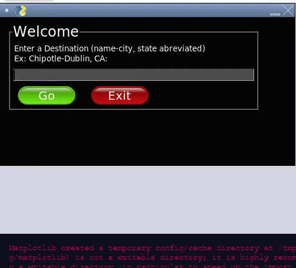

Empower and Excel
In this project, I designed a VEXcode VR program that analyses an obstacle-free path for a VR-SDV virtual robot. In this project, we were given multiple 2-D lists, which had a given starting point (represented by a 3), various obstacles (represented by 2s), and an end-point (represented by 1s). At first, I designed a semi-smart algorithm which could distinguish between the four lists using conditionals which evaluated based upon the location of obstacles. However, afterwards, I was able to develop a smart algorithm which would work with any given 5x5 2-D list. Both my smart algorithm and semi-smart algorithm use mathematical and logical concepts such as logical operators, boolean operators, and arithmetic operators. Logical operators are used throughout to aid conditional statements. For example, in my smart algorithm’s functions, logical operators are used to decide which direction the VEX car should go due to obstacles and boundaries. Arithmetic operators were used in my movement functions to track the VR-SDV’s list position in the Row and Column variables. Abstraction was useful to create clean, easy to read code.
DocumentationVideo Demonstration
VEXcode VR File

Sewa
3/26/21 - 4/14/21, Computer Science Essentials
3/26/21 - 4/14/21, Computer Science Essentials
The Python escape room which my partner and I developed evaluates a student’s preparedness to partake in hybrid learning as it tests on the precautions and safety procedures that are to be followed in order to maintain safety. The questions are both free response and multiple choice. They cover topics about COVID safety, real life scenarios in which the user has to make a decision, and factual information about the global pandemic. The user must answer a question correctly to move on to the next question. The user starts off with 30 points, and has 5 points deducted for every wrong answer. If the user is capable of getting through all three questions with at least 15 points left, the user is rewarded with permission to participate in hybrid learning. In this project, we utilized functions, conditionals, modules, local variables, global variables, and arithmetic operators to create elegant, function based code. In this project, loops were not allowed. Therefore, our functions make up an elegant, modular Python program, where functions interact with each other. In addition, the package Termcolor was used to color certain aspects of the output.
DocumentationVideo Demonstration
Replit Link

Tutoring
3/26/21 - 4/14/21, DEDA Entrepreneurship Competition
3/26/21 - 4/14/21, DEDA Entrepreneurship Competition
Our app is a solution to COVID-19's complicated factors determining the safety of public consumer businesses, such as crowdedness, waiting times, and parking times. This solution has a mid-high impact because it is not a direct cure for Covid and only those with devices can use the app, but it has more ability to become very useful in everyday life and can be very useful for hospitals currently. This also has a mid-high ability for execution, a big part of the app is digesting all the information from users, so it will use a database and CSV, which is the more difficult part, but afterward, the front end of the app is faster to code. The user can perform a simple search to evaluate these specific parameters for specific locations. Our solution organizes this search method a bit differently. Google Maps asks users to input addresses, our solution would ask users the public location name, city, and state that the user wants to go to, then we ask the user to confirm a specific address with buttons and this would work well because although a city might have multiple Starbucks, there are few enough locations that make iterating and asking for a confirmation of the address efficient. Also, unlike existing crowd assessment services, such as Google Maps, our app takes user input to record parameters along with timestamps in live-time. There are COVID risk calculators that assess entire towns, cities, and states, not circumstances of for say, a restaurant. Upon entering a destination the user can fill out a few quick questions on the distance between others, crowd size, parking time, time spent there, etc. to help other users. The destinations can be stores, restaurants, airports, hospitals, and more. We have achieved a prototype that displays the implementation of our COVID-safety evaluating algorithm, graphs, and a table of various parameters. Our prototype can successfully scan locations to find addresses from CSV files with general information, store user input in a new CSV file per location, take a search input to show data in the form of graphs and a COVID-safety percentage output from existing data (The Guardian, 2020). This prototype is not a full-on downloadable app; rather it is a fully functional software with a PySimpleGUI design. It currently runs on Replit.com, and all CSV data is stored as CSV files (permanent until removed) on its server. The ultimate goal of this endeavor consists of two possibilities. First off, larger companies that would like to incorporate our software into their larger applications can buy our product. Alternatively, our prototype has all of the back-end software and GUI concept necessary to eventually create a downloadable web application given more time and resources. Either way, our target consumer, cautious people with a device and data/wifi would utilize our software. Although our prototype currently works with all existing Chipotles, Targets, and Hospitals in the U.S., given proper data, any locations can be added to the software by simply adding CSV files. It would be no more than a 5-minute process, given the address of the locations are available.
DocumentationVideo Demonstration
Replit Link
